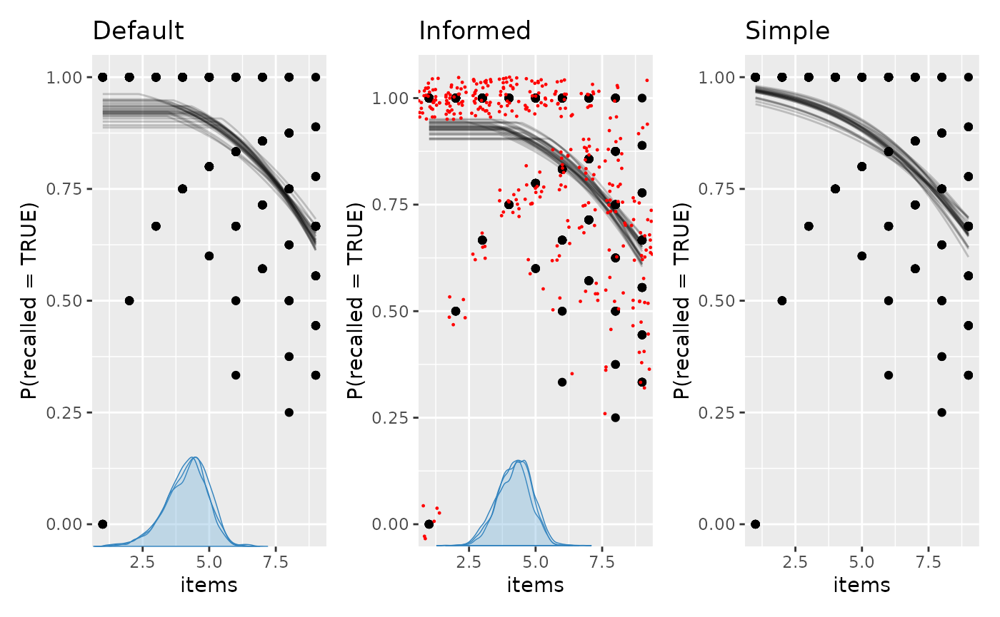

There are three main ways of doing model comparison in
mcp:
- Compare any N
mcpmodels using leave-One-Out cross validation (LOO-CV). Check outloo(fit),loo::loo_compare(fit1$loo, fit2$loo, ...), andloo::loo_model_weights(fit1$loo, fit2$loo, ...). - Flexible directional tests using
hypothesis(fit, cp_1 > 40)orhypothesis(fit, cp_1 > 40 & x_2 > x_1). - Point Bayes Factors tests using the Savage-Dickey density ratio,
e.g.,
hypothesis(fit, cp_1 = 50)orhypothesis(fit, x_2 = x_1).
library(mcp)
future::plan(future::multisession, workers = 3)
set.seed(42) # Make the script deterministicSome models to play with
We know quite a bit about human short term memory. Namely, the average human has almost perfect recall when presented with 1-4 items (we remember them all), and then errors begins intruding when presented with more items (Cowan, 2001). We also know that memory is not infinite, so as , it has to plateau.
In other words, on “easy” trials with items to be recalled, we expect a constant high binomial rate. When , the rate declines. We specify a prior reflecting our a priori knowledge.
model = list(
recalled | trials(items) ~ 1,
~ 0 + items
)
prior = list(
Intercept_1 = "dnorm(2, 1)", # high recall for easy trials
cp_1 = "dnorm(4, 1)", # performance dicontinuity around 4
items_2 = "dnorm(-0.4, 1) T( , -0.2)" # performance deteriorates considerably
)
# A very simple model
model_simple = list(recalled | trials(items) ~ 1 + items)Notice that items is used both as trials
and x-axis. No problem.
Simulate some data using fit$simulate():
# Simulate data
df = data.frame(items = rep(1:9, each = 40), recalled = 1)
# Get just the model - no fit
empty = mcp(model, data = df, family = binomial(), sample = FALSE)
df$recalled = empty$simulate(
empty, df,
cp_1 = 4,
Intercept_1 = 2.5,
items_2 = -0.4
)
head(df)## items recalled
## 1 1 1
## 2 1 0
## 3 1 1
## 4 1 1
## 5 1 1
## 6 1 1Now fit it with and without the informative prior. We set
iter fairly high because this model is not sampled
effectively. We will also add sample = "both" to sample
both prior and posterior. We will need both to compute Bayes
factors using hypothesis() later.
fit_default = mcp(model, data = df, family = binomial(), sample = "both", iter = 10000)
fit_info = mcp(model, data = df, prior = prior, family = binomial(), sample = "both", iter = 10000)
fit_simple = mcp(model_simple, data = df, family = binomial(), sample = "both", iter = 10000)We plot them and add a few ggplot2 layers. We jitter the
raw data in the middle plot, just to give a sense of the densities.
library(patchwork)
library(ggplot2)
plot(fit_default) +
ggtitle("Default") +
plot(fit_info) +
ggtitle("Informed") +
geom_jitter(height = 0.05, color = "red", size = 0.2) +
plot(fit_simple) +
ggtitle("Simple")
Bayes Factors using Savage-Dickey density ratios
You can compute probabilities and Bayes Factors for various
hypotheses using hypothesis(). For example, let’s test the
idea that the change point in recall occurs at four items:
hypothesis(fit_default, "cp_1 = 4")## hypothesis mean lower upper p BF
## 1 cp_1 - 4 = 0 0.1501339 -1.660273 1.511715 0.7798838 3.543054Let’s unpack:
-
hypothesis: For internal convenience,hypothesisalways re-arranges to test against zero. -
mean: When subtracting , the posterior distribution is very close, but somewhat dispersed. -
lowerandupper: The interval width defaults to a 95% central posterior interval, but you can change it usinghypothesis(..., width = 0.8). -
BF: The Savage-Dickey density ratio, which is a Bayes Factor. This is the factor by which the density increases from the prior to the posterior atcp_1 = 4. A means that we now believe more in this value, means that our credence to this value is unchanged, and means that we believe less in it. -
p: BecauseBFis an odds ratio,pcan just be computed from it and contains no new information. For example, corresponds to .
Because BF and p depends directly on the
prior in Savage-Dickey test, it is as much an expression of the prior as
the posterior. Computing it for the higher-prior-density-at-cp_1=4
fit_info, we see a substantially lower BF because we
already had a substantial prior belief in cp_1 = 4:
hypothesis(fit_info, "cp_1 = 4")## hypothesis mean lower upper p BF
## 1 cp_1 - 4 = 0 0.2048259 -1.091245 1.355121 0.5690532 1.320472The Dirichlet prior on change points may be better than the default prior when testing point hypotheses on change points, but an informed prior beats both.
Directional and combinatoric tests
Maybe we just want to test a few directional hypothesis. For example:
- Does recall begin to deteriorate when
cp_1 > 3? - Is the change point in the interval
cp_1 > 3.5 & cp_1 < 4.5? - The only constraint is your imagination. How about all hypotheses we
may have at once?
cp_1 > 3.5 & cp_1 < 4.5 & items_2 < -0.4 & Intercept_1 > 2.5against it’s inverse(cp_1 < 3.5 | cp_1 > 4.5) & items_2 > -0.4 & Intercept_1 < 2.5
hypothesis(fit_info, c(
"cp_1 > 3",
"cp_1 > 3.5 & cp_1 < 4.5",
"cp_1 > 3.5 & cp_1 < 4.5 & items_2 < -0.4 & Intercept_1 > 2.5",
"(cp_1 < 3.5 | cp_1 > 4.5) & items_2 > -0.4 & Intercept_1 < 2.5"
))## hypothesis mean
## 1 cp_1 - 3 > 0 1.204826
## 2 cp_1 > 3.5 & cp_1 < 4.5 NA
## 3 cp_1 > 3.5 & cp_1 < 4.5 & items_2 < -0.4 & Intercept_1 > 2.5 NA
## 4 (cp_1 < 3.5 | cp_1 > 4.5) & items_2 > -0.4 & Intercept_1 < 2.5 NA
## lower upper p BF
## 1 -0.09124526 2.355121 0.96556667 5.3518633
## 2 NA NA 0.52523333 1.7930588
## 3 NA NA 0.29166667 3.6732026
## 4 NA NA 0.03353333 0.5628376Comparing the Bayes factors shows which hypothesis received the larger update from prior to posterior.
There are more examples in the
documentation for hypothesis, including how to test
varying effects.
mcp evaluates the directional hypothesis for both
posterior and prior samples. The posterior probability is reported as
p, and the Bayes factor is the posterior odds divided by
the prior odds:
hypothesis(fit_info, "cp_1 > 3.5 & cp_1 < 4.5")## hypothesis mean lower upper p BF
## 1 cp_1 > 3.5 & cp_1 < 4.5 NA NA NA 0.5252333 1.793059
# ... is identical to
prob = function(fit, prior = FALSE) {
draws = as_draws_df(fit, prior = prior)
mean(draws$cp_1 > 3.5 & draws$cp_1 < 4.5)
}
p_post = prob(fit_info, prior = FALSE)
p_prior = prob(fit_info, prior = TRUE)
BF = (p_post / (1 - p_post)) / (p_prior / (1 - p_prior))
print(c(p = p_post, BF = BF))## p BF
## 0.5252333 1.7930588Cross Validation
We can use the cross-validation from the loo package to
compare the predictive performance of mcp models. Use loo
to compute Widely Applicable Information Criterion (WAIC) or Estimated
Log Predictive Density (ELPD) for each model, and then compare them
using loo::loo_compare().
The strength of LOO-CV is that you can compare any N models, as long
as they are models of same data. In general, LOO-CV is the only
inferential method for non-nested models in mcp. For
example:
- The existence of one or several change points. The article on Poisson change points contain an example of comparing a change-point model to a model without change points.
- Models that differ by several parameters.
- Comparing different priors.
What is LOO-CV?
You can read more about Leave-One-Out Cross Validation elsewhere, but briefly, it does this:
- Computes the posteriors using all data less one data point (hence “leave one out”).
- Computes the posterior density at the left-out data point (out-of-sample data), i.e., the height of the posterior at that data point. For example, if the posterior is a normal distribution, a data point near the mean of the posterior has higher density (it is less “surprising”) than if it is at . Better predictions means higher densities, i.e., less surprisal.
- Repeats step 2 for all observed data and multiplies these densities to get the combined predictive densities at unobserved data. Multiplying is the same as summing in log-space, and the latter has the advantage of being computationally much more feasible. I hope that the name “Estimated Log Predictive Density” (ELPD) makes sense now. The higher the ELPD, the better.
As with Bayes Factors, you can obtain positive evidence for null models. The reason simpler models can be preferred in Bayes is that each new parameter increases the prior predictive space, and thereby comes with a greater “risk” of making way-off predictions. If the parameter does too little to “make up” for this by increasing the likelihood at the observed data points, it is a net negative for predictive accuracy, and the simpler model will be preferred. So a narrower prior predictive space is a simpler model. Fewer parameters and narrower priors simplify the model.
Also, if the data is reasonably informative (it almost always is), LOO-CV is much less influenced by priors than Bayes factors. For LOO, the priors can more be thought of as a regularization (a way to ensure that sampling is efficient) than as the point of departure which all our inferences are relative to (Bayes Factors).
Applied example
We can look at the loo for one model:
loo(fit_info)##
## Computed from 30000 by 360 log-likelihood matrix.
##
## Estimate SE
## elpd_loo -365.7 16.6
## p_loo 2.9 0.3
## looic 731.4 33.1
## ------
## MCSE of elpd_loo is 0.0.
## MCSE and ESS estimates assume MCMC draws (r_eff in [0.0, 1.0]).
##
## All Pareto k estimates are good (k < 0.7).
## See help('pareto-k-diagnostic') for details.This is not terribly informative in and of itself. as is the corresponding SEs, so that is just a matter of scale. What ELPD tells you is that the product of the densities of all left-out data points is approximately , a vanishingly small number because we multiply many small numbers. This is mentally hard to interpret because the density at a given point is only meaningful relative to the full distribution. Furthermore, it depends on the size of the dataset (the more small densities you multiply, the smaller the ELPD).
What is interesting is the relative differences in these
predicted densities. We can compare the models using
loo::loo_compare(). We save the results in
fit$loo to keep things together, which will also be useful
if you want to save(fit) the objects for later use.
fit_default$loo = loo(fit_default)
fit_info$loo = loo(fit_info)
fit_simple$loo = loo(fit_simple)
loo::loo_compare(fit_default$loo, fit_info$loo, fit_simple$loo)## model elpd_diff se_diff p_worse diag_diff diag_elpd
## model2 0.0 0.0 NA
## model1 -0.4 0.2 0.95 |elpd_diff| < 4
## model3 -4.1 2.8 0.93##
## Diagnostic flags present.
## See ?`loo-glossary` (sections `diag_diff` and `diag_elpd`)
## or https://mc-stan.org/loo/reference/loo-glossary.html.Aha, so the second model (“model2”, i.e., fit_info)
passed to loo_compare() was preferred as the other models
had smaller ELPDs. As a first rough conclusion, we’ve learned that
informed priors and a plateau improved out-of-sample predictions.
Again, the absolute number (elpd_diff) is hard to relate
to. More interpretable is the
z' = elpd_diff/se_diff ratio. This is almost
like a z-score, i.e., a ratio of 1.96 corresponds to 95% probability
that one model has superior predictive accuracy. This is not an
effect size but more a measure of certainty that this
is not compatible with equal predictive properties. Just like Bayes
Factors, a nice property over frequentist p-values is that you can
quantify the relative evidence for and against any pair of models
without having to assume one of them as null.
Unfortunately, Sivula et
al. (2020) has shown that the estimation of se is
underestimated (our
-score
is over-estimated) if (1) the model predictions are very similar, (2)
the models are misspecified, or (3) for small data. My take-away from
this paper is that the lesser these issues apply to your models, the
more
is interpretable as a z-score and threshold-inclined people could use,
e.g.,
as a decision threshold. To the extent that the issues apply, one may
need to move the threshold all the way to
cf. this
reply from LOO champion Aki Vehtari (2017).
You could do the same using waic. This is
computationally lighter at the cost of robustness to influential data
points. The results are almost always practically identical.
fit_default$waic = waic(fit_default)
fit_info$waic = waic(fit_info)
fit_simple$waic = waic(fit_simple)
loo::loo_compare(fit_default$waic, fit_info$waic, fit_simple$waic)## model elpd_diff se_diff p_worse diag_diff diag_elpd
## model2 0.0 0.0 NA
## model1 -0.4 0.2 0.95 |elpd_diff| < 4
## model3 -4.1 2.8 0.93##
## Diagnostic flags present.
## See ?`loo-glossary` (sections `diag_diff` and `diag_elpd`)
## or https://mc-stan.org/loo/reference/loo-glossary.html.Stacking
The loo package contains many other useful functions.
For example, if prediction is your goal, it is often optimal to
combine models rather than letting the “winner-takes-it-all” do
all the predicting. This is also called stacking:
loo::stacking_weights(fit_default$loo, fit_info$loo, fit_simple$loo)This means that once model2 (fit_info) has done it’s
“predicting”, the others add very little over and above that. If you
want to learn about how well they predict relative to each other, use
loo::peudobma_weights() which weights proportional to the
ELPD of each model.